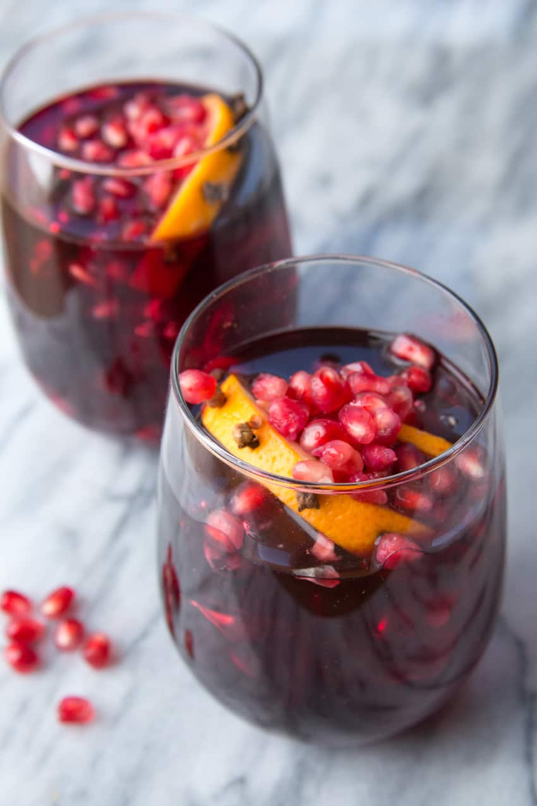

Sangria Cocktail

Description
Sangria is an alcoholic beverage originating in Spain and Portugal.
Sangria is a wine punch that includes chopped fruit and
sparkling water for a refreshing summertime cooler.
Ingredients
- 3/4 cup superfine sugar
- 1 cup tap water
- 1 orange, sliced
- 1 lime, sliced
- 5(750 milliliter) bottles of red wine
- 12 ice cubes
- 6 fluid ounces sparkling water
- 1 cup of fresh:
- raspberries
- strawberries
- blueberries
Instructions
- Dissolve sugar in tap water in a large pitcher.
- Add orange slices, lime slices, and wine.
- Stir in ice cubes until cold.
- Top with sparkling water.
- Serve in red-wine glasses, with fresh berries in each glass.